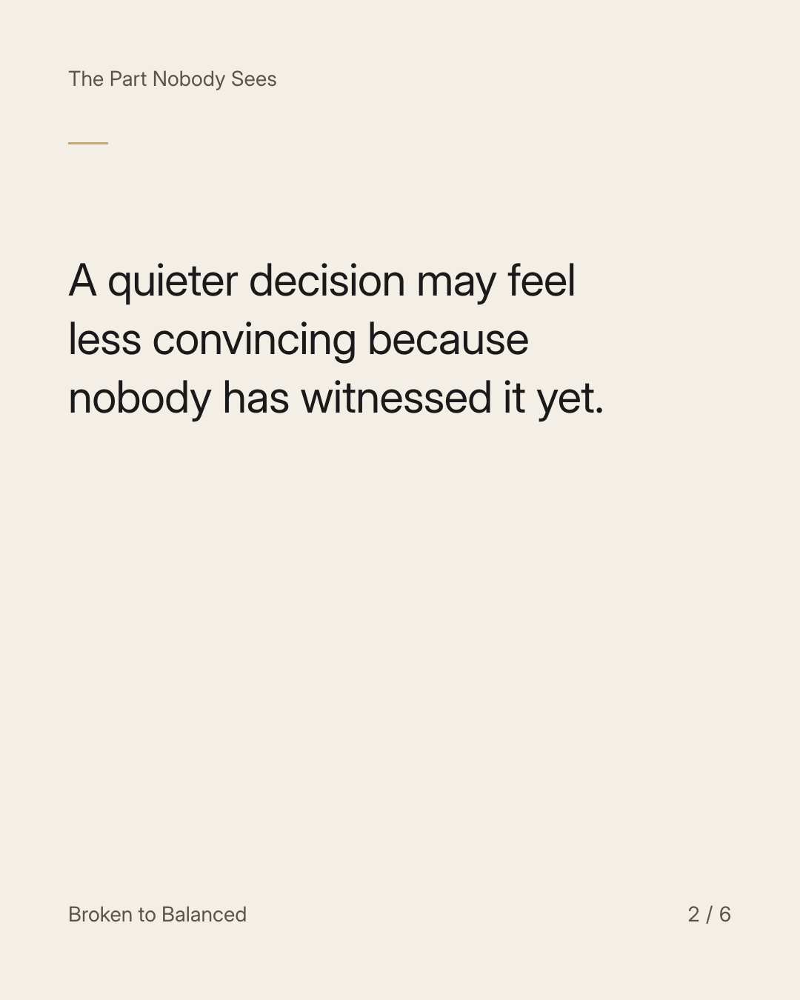
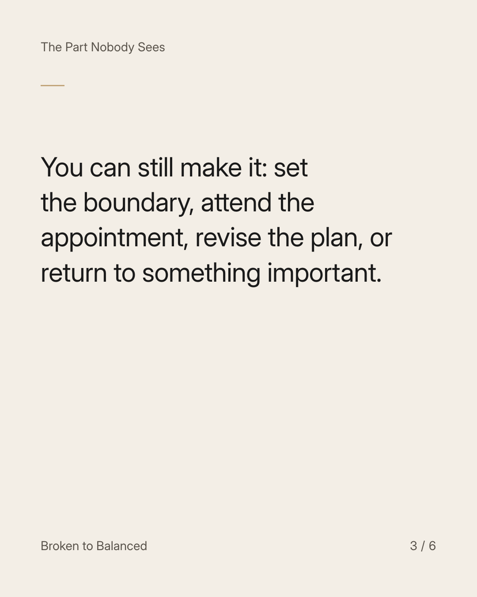
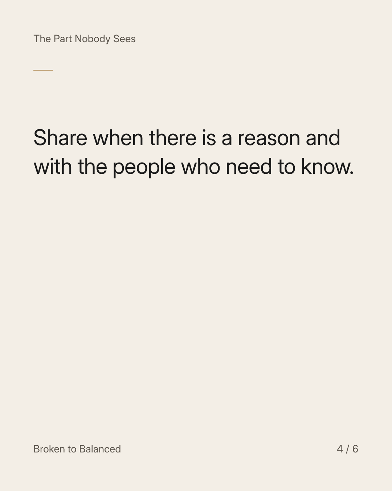
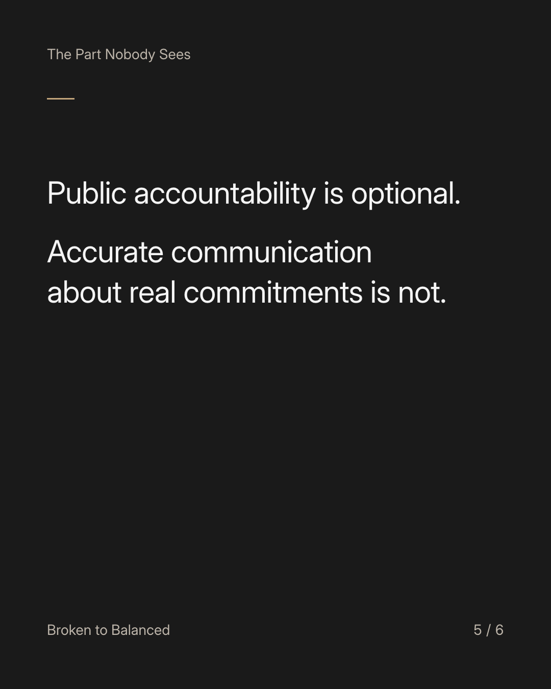
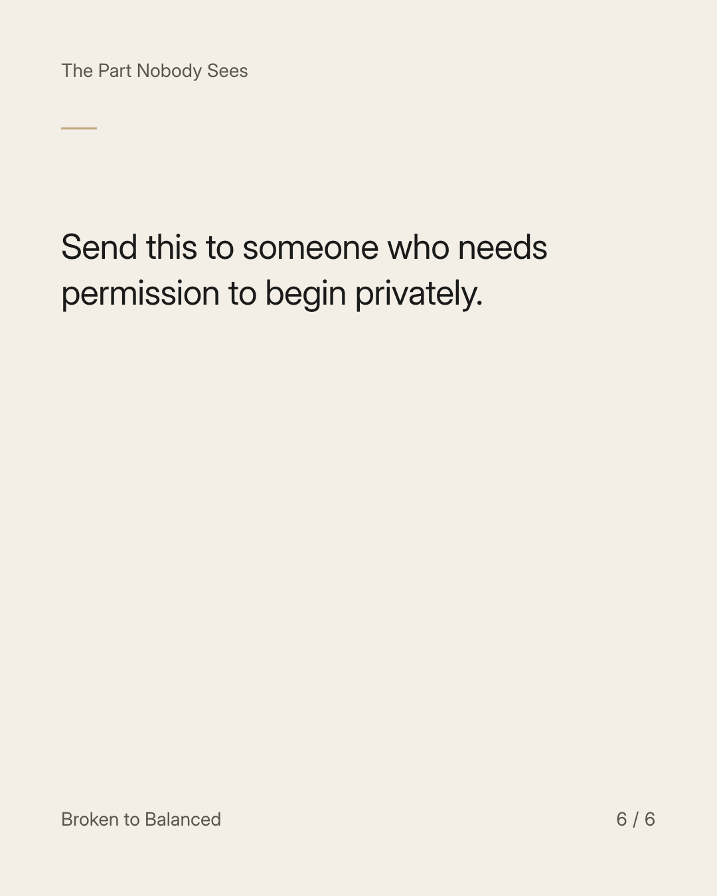

Exact text and accessibility text
You can change your life without announcing a new version of yourself.
Slide 1 of 6. You can change your life without announcing a new version of yourself.


Exact text and accessibility text
A quieter decision may feel less convincing because nobody has witnessed it yet.
Slide 2 of 6. A quieter decision may feel less convincing because nobody has witnessed it yet.


Exact text and accessibility text
You can still make it: set the boundary, attend the appointment, revise the plan, or return to something important.
Slide 3 of 6. You can still make it: set the boundary, attend the appointment, revise the plan, or return to something important.


Exact text and accessibility text
Share when there is a reason and with the people who need to know.
Slide 4 of 6. Share when there is a reason and with the people who need to know.


Exact text and accessibility text
Public accountability is optional. Accurate communication about real commitments is not.
Slide 5 of 6. Public accountability is optional. Accurate communication about real commitments is not.


Exact text and accessibility text
Send this to someone who needs permission to begin privately.
Slide 6 of 6. Send this to someone who needs permission to begin privately.
Exact caption
Plain-text fallback: select and copy the caption.